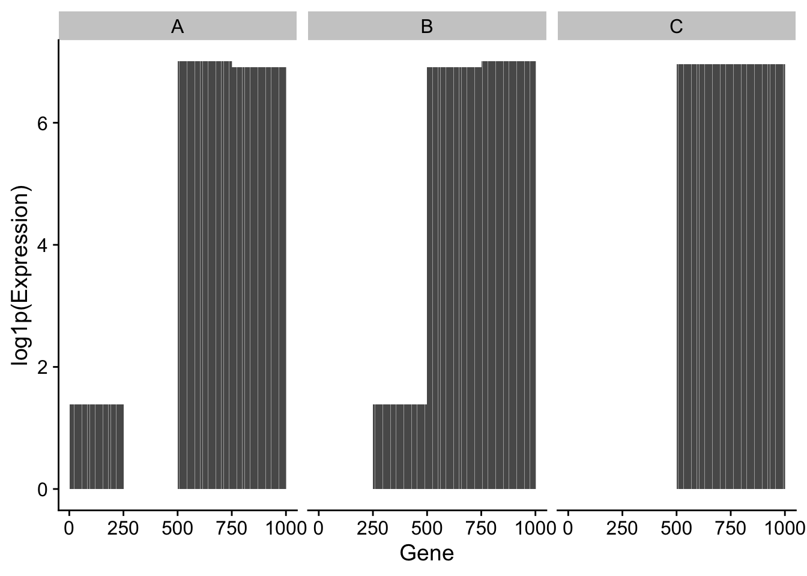
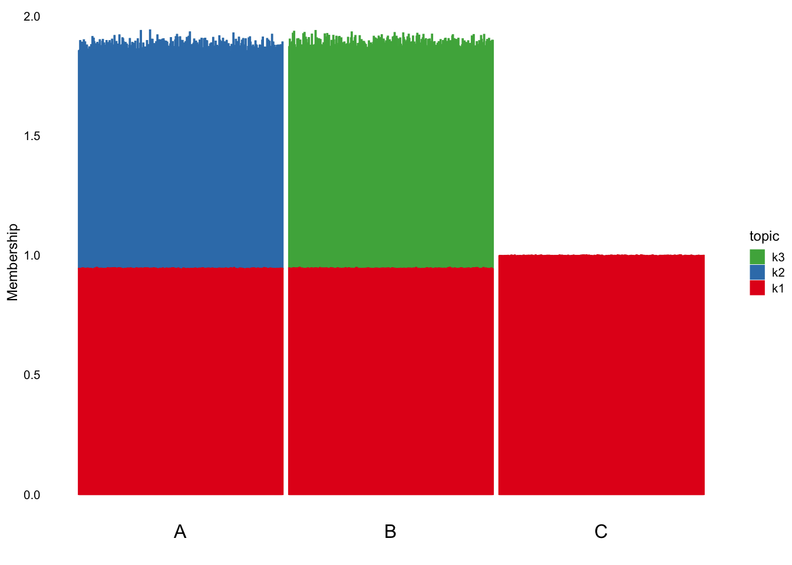
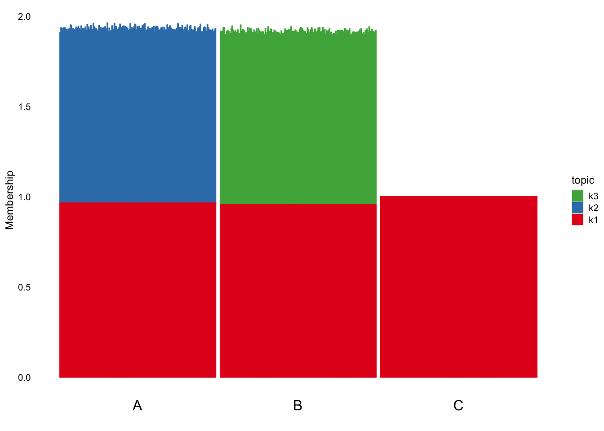
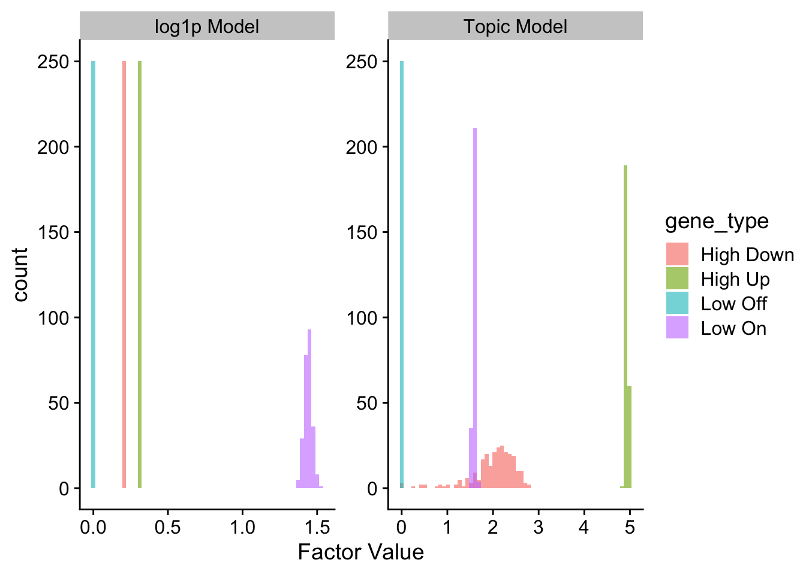
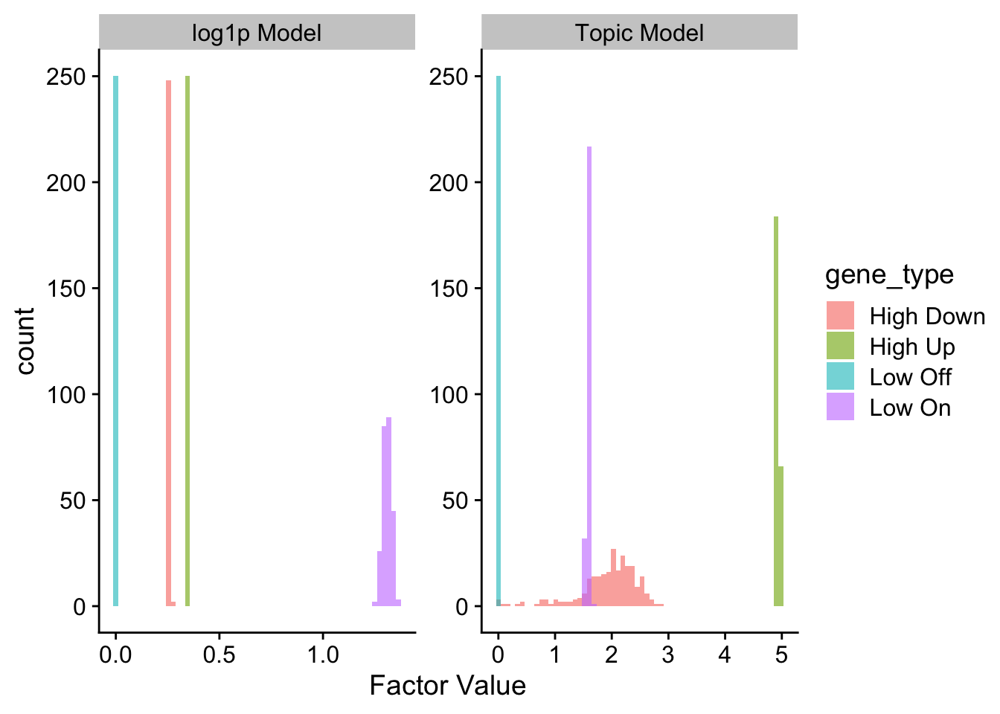

Last updated: 2025-08-08
Checks: 6 1
Knit directory: log1p_experiments/
This reproducible R Markdown analysis was created with workflowr (version 1.7.1). The Checks tab describes the reproducibility checks that were applied when the results were created. The Past versions tab lists the development history.
The R Markdown is untracked by Git. To know which version of the R
Markdown file created these results, you’ll want to first commit it to
the Git repo. If you’re still working on the analysis, you can ignore
this warning. When you’re finished, you can run
wflow_publish to commit the R Markdown file and build the
HTML.
Great job! The global environment was empty. Objects defined in the global environment can affect the analysis in your R Markdown file in unknown ways. For reproduciblity it’s best to always run the code in an empty environment.
The command set.seed(20240402) was run prior to running
the code in the R Markdown file. Setting a seed ensures that any results
that rely on randomness, e.g. subsampling or permutations, are
reproducible.
Great job! Recording the operating system, R version, and package versions is critical for reproducibility.
Nice! There were no cached chunks for this analysis, so you can be confident that you successfully produced the results during this run.
Great job! Using relative paths to the files within your workflowr project makes it easier to run your code on other machines.
Great! You are using Git for version control. Tracking code development and connecting the code version to the results is critical for reproducibility.
The results in this page were generated with repository version 2193e8c. See the Past versions tab to see a history of the changes made to the R Markdown and HTML files.
Note that you need to be careful to ensure that all relevant files for
the analysis have been committed to Git prior to generating the results
(you can use wflow_publish or
wflow_git_commit). workflowr only checks the R Markdown
file, but you know if there are other scripts or data files that it
depends on. Below is the status of the Git repository when the results
were generated:
Ignored files:
Ignored: .DS_Store
Ignored: .Rhistory
Ignored: analysis/.Rhistory
Ignored: analysis/pancreas_cytokine_S1_cache/
Ignored: data/.DS_Store
Untracked files:
Untracked: Manifest.toml
Untracked: Project.toml
Untracked: analysis/high_low_experiment.Rmd
Untracked: analysis/mcf7_cache/
Note that any generated files, e.g. HTML, png, CSS, etc., are not included in this status report because it is ok for generated content to have uncommitted changes.
There are no past versions. Publish this analysis with
wflow_publish() to start tracking its development.
Here, I wanted to do a simple simulation in order to demonstrate differences in how log1p models with different values of c prioritize genes differently.
To do this, I created a 3-group simulation with some “low expressed genes” and some “high expressed genes”. Specifically, the groups are constructed as:
Half of the low expressed genes are expressed at rate \(\lambda = 3\), while the other half are expressed at \(\lambda = 0\). Half the highly expressed genes are expressed at \(\lambda = 1000\), where the other half are expressed at \(\lambda = 1100\).
The low expressed genes not expressed in A are expressed at \(\lambda = 3\), where the low expressed genes which are expressed in A are not expressed (\(\lambda = 0\)). Similarly, the high expressed genes that are most expressed in group A (\(\lambda = 1100\)) are less expressed in group B at \(\lambda = 1000\), where the remaining genes which are lower expressed in group A (\(\lambda = 1100\)) are expressed at \(\lambda = 1100\) in group B.
None of the low expressed genes are expressed at all, where all high expressed genes are expressed at \(\lambda = 1051.5\).
The intuition here is that both the log1p model with small \(c\) and the topic model should fit a baseline, and one factor each to capture the differences between A and C and B and C, respectively. However, the ranking of the genes should be very different between the two models, where the “difference” factors in the log1p model will rank the low expressed genes higher than the high expressed genes, and the topic model will do the opposite.
I demonstrate that this is indeed the case below.
high_expressed_genes <- 500
low_expressed_genes <- 500
p <- high_expressed_genes + low_expressed_genes
n <- 1000
LL <- matrix(
data = c(
rep(1, 333), rep(0, 1000 - 333),
rep(0, 333), rep(1, 333), rep(0, 334),
rep(0, 1000 - 334), rep(1, 334)
),
nrow = n,
ncol = 3
)
FF <- matrix(
data = c(
rep(3, round(low_expressed_genes / 2)),
rep(0, round(low_expressed_genes / 2)),
rep(1100, round(high_expressed_genes / 2)),
rep(1000, round(high_expressed_genes / 2)),
rep(0, round(low_expressed_genes / 2)),
rep(3, round(low_expressed_genes / 2)),
rep(1000, round(high_expressed_genes / 2)),
rep(1100, round(high_expressed_genes / 2)),
rep(0, round(low_expressed_genes / 2)),
rep(0, round(low_expressed_genes / 2)),
rep(1051.5, round(high_expressed_genes / 2)),
rep(1051.5, round(high_expressed_genes / 2))
),
nrow = p,
ncol = 3
)
Lambda <- tcrossprod(LL, FF)
set.seed(1)
Y <- matrix(
data = rpois(n = n * p, lambda = as.vector(Lambda)),
nrow = n,
ncol = p
)
library(fastTopics)
rownames(Y) <- paste0("cell", 1:n)
colnames(Y) <- paste0("gene", 1:p)Below is a plot of expression by group:
expr_df <- data.frame(
group = c(
rep("A", 1000), rep("B", 1000), rep("C", 1000)
),
gene_id = c(
1:1000, 1:1000, 1:1000
),
expr = c(
rep(3, round(low_expressed_genes / 2)),
rep(0, round(low_expressed_genes / 2)),
rep(1100, round(high_expressed_genes / 2)),
rep(1000, round(high_expressed_genes / 2)),
rep(0, round(low_expressed_genes / 2)),
rep(3, round(low_expressed_genes / 2)),
rep(1000, round(high_expressed_genes / 2)),
rep(1100, round(high_expressed_genes / 2)),
rep(0, round(low_expressed_genes / 2)),
rep(0, round(low_expressed_genes / 2)),
rep(1051.5, round(high_expressed_genes / 2)),
rep(1051.5, round(high_expressed_genes / 2))
)
)
ggplot(expr_df, aes(x = gene_id, y = log1p(expr))) +
geom_bar(stat = "identity") + # Use bars to represent lambda values
facet_wrap(~ group) + # Create a panel for each group
labs(x = "Gene", y = "log1p(Expression)") +
cowplot::theme_cowplot() # Use a minimal theme for a clean look
Now, we fit both the log1p model with \(c = 1\) and the topic model with a rank-1 initialization.
Below is a structure plot of the topic model (normalizing so that the maximum loading for each factor is \(1\)).
ft_r1 <- fastTopics:::fit_pnmf_rank1(Y)
init_LL <- cbind(
ft_r1$L,
matrix(
data = 1e-3,
nrow = n,
ncol = 2
)
)
rownames(init_LL) <- rownames(Y)
init_FF <- cbind(
ft_r1$F,
matrix(
data = 1e-3,
nrow = p,
ncol = 2
)
)
rownames(init_FF) <- colnames(Y)
ft_init <- init_poisson_nmf(X = Y, F = init_FF, L = init_LL)
ft_mod <- fit_poisson_nmf(X = Y, fit0 = ft_init, verbose = "none")
group <- c(rep("A", 333), rep("B", 333), rep("C", 334))
structure_plot(log1pNMF:::normalize_bars(ft_mod$L), grouping = group, gap = 10, loadings_order = 1:n, topics = rev(1:3)) +
theme(axis.text.x = element_text(angle = 0,hjust = 0.5, size = 12)) + ylab("Membership")
And here is the log1p model:
set.seed(1)
log1p_mod <- fit_poisson_log1p_nmf(
Y = Y, K = 3, loglik = "exact",
control = list(maxiter = 250, verbose = FALSE)
)
colnames(log1p_mod$LL) <- paste0("k", 1:3)
colnames(log1p_mod$FF) <- paste0("k", 1:3)
LL <- log1p_mod$LL
FF <- log1p_mod$FF
log1p_mod$LL[,"k2"] <- LL[,"k3"]
log1p_mod$LL[,"k3"] <- LL[,"k2"]
log1p_mod$FF[,"k2"] <- FF[,"k3"]
log1p_mod$FF[,"k3"] <- FF[,"k2"]
normalized_structure_plot(
log1p_mod,
grouping = group,
gap = 10,
loadings_order = 1:n,
topics = rev(1:3)
) +
theme(axis.text.x = element_text(angle = 0,hjust = 0.5, size = 12)) + ylab("Membership") The structure plots are nearly identical, as expected.
# NOTE: need to normalize these based on the max-1 normalization above
max_col <- apply(log1p_mod$FF, 2, max)
log1p_FF <- sweep(log1p_mod$FF, 2, max_col, FUN = "*")
max_col <- apply(ft_mod$F, 2, max)
tm_FF <- sweep(ft_mod$F, 2, max_col, FUN = "*")
colnames(tm_FF) <- paste0("k", 1:3)
k2_df <- data.frame(
model = c(
rep("Topic Model", 1000),
rep("log1p Model", 1000)
),
factor_value = c(
log1p(tm_FF[,"k2"]),
log1p_FF[,"k2"]
),
gene_type = c(
rep("Low On", 250),
rep("Low Off", 250),
rep("High Up", 250),
rep("High Down", 250)
)
)
k3_df <- data.frame(
model = c(
rep("Topic Model", 1000),
rep("log1p Model", 1000)
),
factor_value = c(
log1p(tm_FF[,"k3"]),
log1p_FF[,"k3"]
),
gene_type = c(
rep("Low Off", 250),
rep("Low On", 250),
rep("High Down", 250),
rep("High Up", 250)
)
)However, there are very large differences in the ranking of genes when comparing factors 2 and 3 between the topic model and the log1p model. Below I have plotted factor values (were I log1p transformed factors from the topic model for visibility). Below is factor 2:
ggplot(k2_df, aes(x = factor_value, fill = gene_type)) +
geom_histogram(position = "identity", alpha = 0.6, bins = 60) +
cowplot::theme_cowplot() +
facet_wrap(~model, scales = "free") +
xlab("Factor Value")
Factor 3 looks nearly the same:
ggplot(k3_df, aes(x = factor_value, fill = gene_type)) +
geom_histogram(position = "identity", alpha = 0.6, bins = 60) +
cowplot::theme_cowplot() +
facet_wrap(~model, scales = "free") +
xlab("Factor Value")
Essentially, what we are seeing is that in the log1p model, the genes that go from “off” (\(\lambda = 0\)) to on (\(\lambda = 3\)), which I term “Low on”, are prioritized in the factors of the log1p model. This makes sense, because on the log1p scale, going from \(0\) to \(3\) is a much greater change than going from \(1000\) to \(1100\). On the other hand, the topic model clearly prioritizes the genes that go from \(1000\) to \(1100\) in the relevant group (“High Up”). In fact, likely due to noise, many of the “High Down” genes are ranked higher than the low on genes.
sessionInfo()R version 4.4.0 (2024-04-24)
Platform: aarch64-apple-darwin20
Running under: macOS Ventura 13.5
Matrix products: default
BLAS: /Library/Frameworks/R.framework/Versions/4.4-arm64/Resources/lib/libRblas.0.dylib
LAPACK: /Library/Frameworks/R.framework/Versions/4.4-arm64/Resources/lib/libRlapack.dylib; LAPACK version 3.12.0
locale:
[1] en_US.UTF-8/en_US.UTF-8/en_US.UTF-8/C/en_US.UTF-8/en_US.UTF-8
time zone: America/New_York
tzcode source: internal
attached base packages:
[1] stats graphics grDevices utils datasets methods base
other attached packages:
[1] log1pNMF_0.1-6 fastTopics_0.6-192 ggplot2_3.5.2
loaded via a namespace (and not attached):
[1] gtable_0.3.6 xfun_0.52 bslib_0.9.0
[4] htmlwidgets_1.6.4 ggrepel_0.9.6 lattice_0.22-6
[7] quadprog_1.5-8 vctrs_0.6.5 tools_4.4.0
[10] generics_0.1.3 parallel_4.4.0 tibble_3.2.1
[13] pkgconfig_2.0.3 Matrix_1.7-0 data.table_1.17.0
[16] SQUAREM_2021.1 RcppParallel_5.1.10 lifecycle_1.0.4
[19] truncnorm_1.0-9 farver_2.1.2 compiler_4.4.0
[22] stringr_1.5.1 git2r_0.33.0 progress_1.2.3
[25] munsell_0.5.1 RhpcBLASctl_0.23-42 httpuv_1.6.15
[28] htmltools_0.5.8.1 sass_0.4.10 yaml_2.3.10
[31] lazyeval_0.2.2 plotly_4.10.4 later_1.4.2
[34] pillar_1.10.2 crayon_1.5.3 jquerylib_0.1.4
[37] tidyr_1.3.1 MASS_7.3-61 uwot_0.2.3
[40] cachem_1.1.0 gtools_3.9.5 tidyselect_1.2.1
[43] digest_0.6.37 Rtsne_0.17 stringi_1.8.7
[46] dplyr_1.1.4 purrr_1.0.4 ashr_2.2-66
[49] labeling_0.4.3 cowplot_1.1.3 rprojroot_2.0.4
[52] fastmap_1.2.0 grid_4.4.0 colorspace_2.1-1
[55] cli_3.6.5 invgamma_1.1 magrittr_2.0.3
[58] withr_3.0.2 prettyunits_1.2.0 scales_1.3.0
[61] promises_1.3.2 float_0.3-2 MatrixExtra_0.1.15
[64] rmarkdown_2.29 httr_1.4.7 startupmsg_0.9.6.1
[67] workflowr_1.7.1 hms_1.1.3 pbapply_1.7-2
[70] evaluate_1.0.3 distr_2.9.3 knitr_1.50
[73] irlba_2.3.5.1 viridisLite_0.4.2 rlang_1.1.6
[76] Rcpp_1.0.14 mixsqp_0.3-54 glue_1.8.0
[79] rstudioapi_0.16.0 jsonlite_2.0.0 R6_2.6.1
[82] sfsmisc_1.1-18 fs_1.6.6